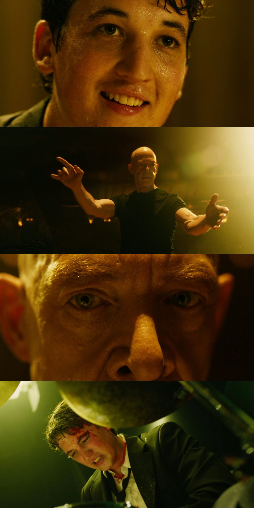

Whiplash es una película dramática que narra la intensa y a menudo tóxica relación entre un ambicioso estudiante de batería, Andrew Neiman, y su implacable profesor, Terence Fletcher.
La cinta destaca por su ritmo frenético, impulsado por una banda sonora de jazz magistral y un montaje espectacular que transmite la tensión y el agotamiento físico del protagonista.
Con actuaciones estelares que le valieron múltiples premios Oscar, la obra plantea un intenso debate sobre hasta qué punto es lícito presionar a alguien para alcanzar la genialidad absoluta.